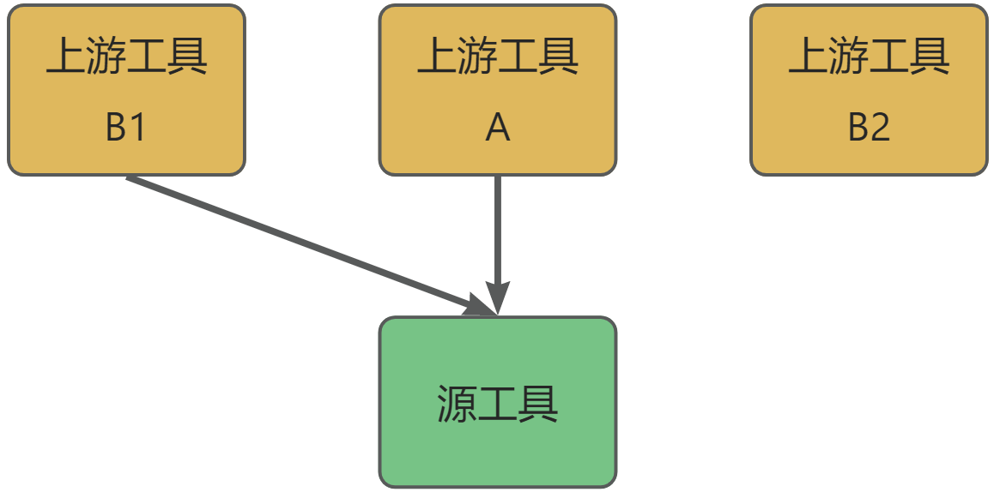

管理工程中的工具#
在 打开一个工程 后，可以管理其中的工具。
auto project = visionflow::Project::Open(...);
添加工具#
使用 visionflow::Project::add_tool() 函数向工程中添加工具。
该函数接收2个参数。
第1个为字符串，指定工具类型。可用的工具包括VisionFlow内置的输入（Input）、
分割（Segmentation）等，和用户通过 visionflow::graph::ToolFactory::Register()
自行注册的工具。可以使用 visionflow::graph::ToolFactory::GetAllToolNames() 获取。
Note
如果指定的工具类型有误，将抛出 visionflow::excepts::InvalidToolType 异常。
第2个参数可选，为工具的唯一标识符，默认为空字符串。 当参数留空时，VisionFlow会根据工具类型生成一个不冲突的标识符。
Note
如果指定了标识符，且工程中已经存在的同名工具，将抛出 visionflow::excepts::ToolAlreadyExist 异常。
函数返回新添加工具的标识符。如果通过参数指定了标识符，则返回的标识符一定与指定的相同。
// 自动生成一个标识符 返回的标识符可能形如 Input_1
std::string tool_id_input = project->add_tool("Input");
// 指定标识符 只要成功添加，保证返回的标识符一定与指定的相同
std::string tool_id_seg = project->add_tool("Segmentation", "Seg_1");
assert(tool_id_seg == "Seg_1");
// 指定标识符，但是工程中已经存在同名工具，抛出异常
// std::string exception = project->add_tool("Segmentation", "Seg_1");
查看现有工具列表#
使用 visionflow::Project::tool_list() 函数获取工程中所有工具的标识符列表。
查看工具内的节点名称列表#
每个内嵌工具的工具名称可以通过 visionflow::Project::add_tool() 函数的第二个参数 tool_id 指定，
但工具里包含的节点名称是固定的，并且存放在以工具类型命名的结构体中（ 节点名常量 ）。
例如，分割工具的节点名称存放在 visionflow::Segmentation 结构体中。
在工具之间建立连接#
手动连接#
使用 visionflow::Project::connect() 函数手动建立连接。
该函数接收2个参数，为 visionflow::ToolNodeId 类型，分别指定源节点和目标节点。
每个 ToolNodeId 中包括工具标识符、节点标识符和可省略的下标。
Note
每个工具中包含的各个节点名可以使用 visionflow::{ToolType}::{node_name} 获取。
例如，分割工具中的预测结果为 visionflow::Segmentation::pred，详见 查看工具内的节点名称列表 。
// 将输入工具的图像输出连接到分割工具的图像输入
project->connect({ "Input_1", visionflow::Input::image }, { "Seg_1", visionflow::Segmentation::image });
// 另一种可能的ToolNodeId形式
project->connect({ "Input_1", visionflow::Input::views }, { "Seg_1", visionflow::Segmentation::views });
// 含有下标的节点标识符
project->connect({ "Input_1", visionflow::Input::image }, { "Integration", visionflow::Integration::properties, 0 });
project->connect({ "Seg_1", visionflow::Segmentation::match_result }, { "Integration/properties[1]" });
如果2个节点之间已经存在连接，将不进行任何操作。 如果指定的目标节点含有合法下标，将源节点连接到目标节点的指定下标；覆盖此下标已经存在的连接。 如果指定的目标节点不含下标，且目标节点的输入数量仍有剩余，将自动连接到目标节点的下一个输入下标。
Note
必须保证源和目标标识符正确、不会成环、输入输出方向正确、类型匹配。如果存在错误，将抛出以下异常：
visionflow::excepts::ToolNotFound visionflow::excepts::NodeNotFound
visionflow::excepts::LoopConnection visionflow::excepts::InvalidConnection
visionflow::excepts::DataTypeMismatch visionflow::excepts::InActiveOutputNode
自动连接（不推荐）#
使用 visionflow::Project::auto_connect() 函数尝试自动建立连接。
该函数接收2个参数，分别为源工具标识符和目标工具标识符。
该函数会尽可能为目标工具的所有输入节点建立连接。如果目标工具存在多输入节点，
或存在函数无法自动建立连接的输入节点，均认为自动连接失败，
函数返回 false ，不会做出任何更改。如果连接成功，函数返回 true 。
Note
该函数建立的连接可能并不符合预期。因此，不推荐 在复杂的工程中使用该函数。
即使成功自动连接，也应仔细检查建立的连接是否是用户所期望的。
尝试建立连接的逻辑如下：
可以使用的输出节点范围是：源工具的所有输出节点，以及源工具的所有前序依赖的输出节点，按照拓扑顺序
4次遍历仍未建立连接的输入节点，优先选择尚未连接且数据特征完全匹配的输出节点， 然后选择已经连接或数据特征不完全匹配的输出节点。具体逻辑是：
尚未连接、与输入节点的特征要求完全匹配的输出节点
尚未建立连接的输出节点中，能满足输入要求特征的其他输出节点（不是完全匹配，即输出特征多于输入特征）
所有输出节点中，特征完全匹配的输出节点
所有输出节点中，能满足输入要求的任何输出节点
bool ok = project->auto_connect("Input_1", "Seg_1");
// 如果 ok==false，保证不对工程做出任何更改
修改连接关系#
修改现有连接#
对于已经建立的连接，可以通过 visionflow::Project::connect() 函数修改连接关系。
通过参数传入新的源工具的标识符和节点，和已经连接的目标工具、节点、下标，即断开目标工具原有连接， 在传入参数节点之间建立新连接。
// 现有连接
project->connect({ "Input_1/image" }, { "Integration/properties[0]" });
// 修改连接：Input_1/image 到 Integration/properties[0] 的连接断开
project->connect({ "Input_2/image" }, { "Integration/properties[0]" });
断开连接#
使用 visionflow::Project::disconnect() 函数断开连接。
指定上下游节点的重载#
函数接收2个 visionflow::ToolNodeId 类型的参数，分别指定要断开连接的源节点和目标节点。
// 断开连接
project->disconnect({ "Input_1/image" }, { "Integration/properties[0]" });
Note
需保证指定的源节点和目标节点存在、输入输出方向正确、类型正确、连接存在，否则将抛出以下异常：
visionflow::excepts::ToolNotFound visionflow::excepts::NodeNotFound
visionflow::excepts::InvalidConnection visionflow::excepts::InvalidNodeId
如果指定了下标，且下标超过实际连接数， 不会抛出异常 ，也不做任何更改。
只指定下游节点的重载#
函数接收1个 visionflow::ToolNodeId 类型的参数，指定要断开连接的下游节点。
如果参数指定了下标，只断开该下标的连接；否则，断开该节点上的所有连接。
project->disconnect({ "Integration/properties[0]" });
删除工具#
使用 visionflow::Project::remove_tool() 函数删除工具。
函数接收2个参数。第1个为工具的标识符。
第2个参数 remove_all_depends_on_this 为可选的删除策略，默认为 false ，即只删除本工具；
如果传入 true ，将同时删除所有直接或间接依赖于本工具的工具。
函数会删除工具、断开所有与被删除工具的连接、删除工具中的所有数据和自定义内容。
// 删除工具
project->remove_tool("Seg_1");
// 删除工具和下游所有依赖该工具的工具
project->remove_tool("Input_1", true);
Note
如果传入工具标识符不存在， 不会 抛出异常，不进行任何修改。
复制工具#
复制单个工具#
使用 visionflow::Project::copy_tool() 函数复制单个工具。
函数接收3个参数。第1个为被复制的工具标识符。第2个为可选参数，指定新工具的标识符；默认为空字符串，
表示自动生成新标识符。第3个为 visionflow::graph::CopyToolOptions 类型可选参数，指定复制策略。
复制策略包含2个字段。
auto_connect 指定是否为新复制的工具建立连接，默认为 false ，即新复制的工具上不带有任何连接。
tool_maps 为 std::map<std::string, std::string> ，仅在 auto_connect 为 true 时有效，
对于源工具的每个上游连接，如果 tool_maps 中存在上游工具标识符的映射，新工具将连接到映射的工具上；
否则将与源工具连接到相同的上游工具。
举例说明，假设工程中现有如图所示的工具
{kind=link}
指定将源工具复制一份， CopyToolOptions 为 { true, {{"B1", "B2"}} } 。
复制的结果如下图，可见新工具到上游A的连接仍然存在，到上游B1的连接被重新映射到B2。
{kind=link}
函数返回新工具的标识符。如果通过传入参数指定了标识符，保证返回的标识符与传入参数相同。 源工具内部的数据都将被原样复制。
// 新的工具有新生成的标识符、源工具的数据，没有连接
std::string new_seg_1 = project->copy_tool("Seg_1");
// 新工具标识符固定为 Seg_2
std::string new_seg_2 = project->copy_tool("Seg_1", "Seg_2");
// 新工具的有新生成的标识符，与源工具连接到相同的上游工具
std::string new_seg_3 = project->copy_tool("Seg_1", "", { true });
// 源工具原来向上连接到 Input_1，新工具连接到 Input_2
std::string new_seg_4 = project->copy_tool("Seg_1", "", { true, { { "Input_1", "Input_2" } } });
Note
如果源工具标识符为空或不存在，分别抛 visionflow::excepts::InvalidToolId 和
visionflow::excepts::ToolNotFound 异常。
如果指定了新工具标识符，但此标识符已经存在，抛 visionflow::excepts::ToolAlreadyExist 异常。
如果指定了 tool_maps ，但其中指定的新上游工具标识符不存在，抛 visionflow::excepts::ToolNotFound 异常。
复制工具组#
使用 visionflow::Project::copy_tool_group() 函数复制工具组。
函数接收2个参数。第1个为 std::set<std::string> ，指定将被复制的工具标识符。
第2个为可选的 visionflow::graph::CopyToolOptions 类型参数以指定复制策略。
复制工具组时不支持指定新工具的标识符，都由VisionFlow自动生成。
当传入的 CopyToolOptions 中 auto_connect 为 false 时，
新复制的工具将不包含任何连接，包括源工具组内部的连接也被删除；为 true 时，
工具组内部的连接将原样被复制，组内工具的上游连接如复制单个工具一样被复制。
函数返回一个 std::map<std::string, std::string> ，为源工具标识符到复制工具标识符的映射。
举例说明，工程中现有如图所示的工具，将工具A、B、C作为一组复制一份。
{kind=link}
传入 CopyToolOptions 为 { true } ，即保留内部和上游的连接关系，结果如图所示
{kind=link}
复制工具组也支持将上游连接映射到新的工具，请参考复制单个工具的例子。
// 这样复制出的两个工具不具有任何连接
auto copied_tools_1 = project->copy_tool_group({ "Seg_1", "Seg_2" });
// Seg_1 与 Seg—_2 之间如果有连接，新工具间也复制相同的连接
// Seg_1 Seg_2 的上游连接也被复制
auto copied_tools_2 = project->copy_tool_group({ "Seg_1", "Seg_2" }, { true, {} });
Note
抛出异常的情况与复制单个工具相同。
跨工程复制工具#
使用 visionflow::Project::copy_tool_from_proj() 函数从另一个工程复制工具。
在进行复制前，需要先打开源工程和目标工程，并在目标工程中创建一个与被复制工具类型相同的工具。 在目标工程中调用该函数，并将源工程作为参数传入。
该函数 不能 用于在同一工程内复制工具，如果需要在同一工程内复制工具，请使用 visionflow::Project::copy_tool() 函数。
函数接收4个参数，第1个为 const visionflow::Project & 数据源工程的引用。
第2个参数为源工程中被复制工具的工具标识符。
第3个参数为当前工程中目标工具的标识符。
第4个参数为可选的 visionflow::CopyToolFromProjOptions 类型，指定复制策略。
复制时，目标工具上绑定的用户自定义数据将被清空，并由源工具的用户自定义数据覆盖。
默认不复制计算节点上的上下文数据。
如果将 CopyToolFromProjOptions 中 copy_compute_context 字段设为 true，
函数将用源工具的计算节点上下文完全覆写目标工具的计算节点上下文。
此处完全覆写是指，如果源工具的节点有上下文数据，目标工具对应节点的上下文数据将被设置为此值；
否则，对应节点的上下文数据将被清空。
默认将用源工具的所有参数节点完全覆写目标工具的参数节点。
将 CopyToolFromProjOptions 中 params_selection 字段设为需要复制的参数节点名称，
函数将只在这些节点上执行覆写。
对于没有被选中的参数节点，如果 params_clear_nonselected 字段为 true，它们将被清空；否则，它们在目标工具的旧数据保持不变。
默认不复制工具关联的任何属性数据。将 CopyToolFromProjOptions 中 copy_properties 字段设为 true 以复制属性数据。
复制属性数据时的行为由 CopyToolFromProjOptions 中 prop_options 字段控制；
这一字段类型为 visionflow::CopyToolFromProjPropertyOptions。
prop_options 的各个字段含义如下：
from_input_tool和to_input_tool字段分别指定源工程和目标工程中的输入工具标识符。 输入工具将被用来确定样本的指纹。拥有相同指纹的样本被视为同一样本，可以从源工程的样本把属性数据复制到目标工程的同一样本。props_selection字段指定需要复制的属性节点名称。如果为空，将复制该工具所有属性节点上的数据。未被选中的属性数据将保持原样。sample_set_mapping字段指定源工程到目标工程样本集的映射关系。如果为空，源工程中的样本集将映射到目标样本集的同名样本集。 样本的匹配是在每一对样本集内部分别进行；即，如果源工程的A样本集和目标工程的B样本集有一对同一样本，除非指定了从A到B的映射，否则不会在这一对样本之间复制数据。如果目标样本的一个属性数据为空，将从源样本取值复制过来。 如果该属性数据不为空，当
preserve_exist_props字段设置为true时，将不会复制这一样本的这一属性，保留旧的数据。 当preserve_exist_props字段设置为false时，如果源样本的这一属性有数据，将用源的数据覆盖目标的旧数据； 如果源样本这一属性为空，并且设定了erase_exist_prop_if_source_empty字段为true，将清空目标样本的这一属性。
auto target = Project::Open(...);
auto source = Project::Open(...);
auto target_tool_id = target->add_tool("Segmentation");
CopyToolFromProjOptions options;
options.copy_compute_context = false;
options.params_selection = {"trainer.args", "sample_recommend.args", "infer.args", "model"};
options.params_clear_nonselected = false;
options.copy_properties = true;
options.prop_options.from_input_tool = "Input_1";
options.prop_options.to_input_tool = "Input_2";
options.prop_options.sample_set_mapping = {{"source_sample_set", "target_sample_set"}, {"another_source", "another_target"}};
options.prop_options.props_selection = {}; // for copying all properties
options.prop_options.preserve_exist_props = false;
options.prop_options.erase_exist_prop_if_source_empty = true;
target.copy_tool_from_proj(*source, "source_tool_id", target_tool_id, options);
Note
如果源工程和目标工程是同一个工程，抛 visionflow::excepts::InvalidArgument 异常。
如果指定的两个工具不存在，或工具不是相同类型，分别抛 visionflow::excepts::ToolNotFound 和
visionflow::excepts::InvalidToolType 异常。
从模型复制工具#
使用 visionflow::Model::copy_tool_to_proj() 函数将模型中的工具复制到工程中。
在进行复制前，需要先打开模型和目标工程，并在目标工程中创建一个与被复制工具类型相同的工具。 在模型中调用该函数，并将目标工程作为参数传入。
函数接收4个参数，第1个为 visionflow::Project & 目标工程的引用。
第2个参数为源工程中被复制工具的工具标识符。
第3个参数为当前工程中目标工具的标识符。
第4个参数为可选的 visionflow::ModelCopyToolToProjOptions 类型，指定复制策略。
参数控制复制行为的方式请参考 跨工程复制工具 。
auto target = Project::Open(...);
auto source = Model(...);
auto target_tool_id = target->add_tool("Segmentation");
ModelCopyToolToProjOptions options;
options.copy_compute_context = false;
options.params_selection = {"trainer.args", "sample_recommend.args", "infer.args", "model"};
options.params_clear_nonselected = false;
source.copy_tool_to_proj(*target, "source_tool_id", target_tool_id, options);
重命名工具#
使用 visionflow::Project::rename_tool() 函数重命名工具。
函数接收2个字符串参数，为工具当前的标识符和新的标识符。
函数将用新的标识符新建一个相同的工具，然后复制数据和连接，最后删除原工具。
project->rename_tool("Seg_1", "Seg_1_renamed");
Note
如果任何一个标识符为空，抛 visionflow::excepts::InvalidToolId 异常。
如果旧工具不存在，抛 visionflow::excepts::ToolNotFound 异常。
如果新工具标识符已经存在，抛 visionflow::excepts::ToolAlreadyExist 异常。
在复制数据时还可能抛出 visionflow::excepts::DatasetNotExists
visionflow::excepts::DatasetAlreadyExists
visionflow::excepts::RocksDBError 异常。
导出/导入工程模板#
工程模板是一个JSON文件，工程中的工具和其连接关系可以被导出为工程模板，从工程模板可以导入这些工具和之间的连接。
使用 visionflow::Project::export_proj_template() 函数导出工程模板，
使用 visionflow::Project::import_proj_template() 函数导入工程模板。
2个函数都只接收1个参数，指定工程模板文件的路径。
工程模板的导入等价于向工程中添加模板中的所有工具，然后在这些工具之间建立连接。 因此，导入时工程内可以含有其他工具和连接，只要其标识符不与模板内冲突即可。
project->export_proj_template("template.json");
project->import_proj_template("template.json");
导出的工程模板内容如以下所示， tools 是工具标识符到其类型的映射， connections 是连接关系的数组。
{
"tools": {
"Input_1": "Input",
"Segmentation_1": "Segmentation",
},
"connections": [
{
"from_node_id": "image",
"from_tool_id": "Input_1",
"to_node_id": "image",
"to_tool_id": "Segmentation_1"
},
{
"from_node_id": "views",
"from_tool_id": "Input_1",
"to_node_id": "views",
"to_tool_id": "Segmentation_1"
}
]
}
Note
导出模板时，如果指定的输出文件已经存在或无法正常创建，分别抛出
visionflow::excepts::FileExisted 和 visionflow::excepts::CanNotOpenFile 异常。
Note
导入模板时，如果指定输入文件无法正常打开，抛 visionflow::excepts::CanNotOpenFile 异常；
如果文件内容损坏导致无法导入，抛 visionflow::excepts::DeSerializeFailed 异常;
如果导入时添加工具出错，或在添加的工具之间建立连接出错，均抛出异常，
可参考对应函数 visionflow::Project::add_tool() 和 visionflow::Project::connect()。
查看工程检测流程#
获取Graphviz结构图#
使用 visionflow::Project::to_graphviz() 函数将工程转换成Graphviz的dot语言。
该函数接收1个 visionflow::graph::DotInfoOptions 参数，用于指定是否导出特定元素。
DotInfoOptions 有3个字段，依次为： with_node_type 控制是否显示节点类型，
with_node_docs 控制是否显示节点描述， with_update_time 控制是否显示节点更新时间。
以上3个字段均默认为 true ，即导出的图示含有最多信息。
可以使用一些工具，如 Graphviz Online ，查看导出的图示。
std::string dotlang = project->to_graphviz();
获取工具内部信息#
使用 visionflow::Project::tool_info() 函数获取工具的信息。
该函数接收1个参数，为工具标识符。返回一个 visionflow::ToolInfo 对象。
通过该对象，可以查询工具类型、输入输出、内部计算节点等。
ToolInfo 对象的详细用法#
工具一般信息#
visionflow::ToolInfo::id() 和 visionflow::ToolInfo::type()
函数返回工具的标识符和类型。
数据节点（数据边/属性或参数）#
visionflow::ToolInfo::input_edges() visionflow::ToolInfo::output_edges()
和 visionflow::ToolInfo::data_edges() 函数返回一个 std::vector<visionflow::DataEdge> ，
分别为工具的输入、输出数据节点和所有数据节点（包括输入输出）。
对于每个 visionflow::DataEdge 对象，可以获取的信息有：
概念类型（属性或参数）
visionflow::DataEdge::cpt_tag()是否是虚拟输入节点
visionflow::DataEdge::is_virtual_port()是否是工具的输出节点
visionflow::DataEdge::is_tool_output()使用该数据的计算节点
visionflow::DataEdge::used_by()
如果是虚拟输入节点，还可以获取：
连接到的上游工具
visionflow::DataEdge::redirects()
如果不是虚拟输入节点，还可以获取：
计算节点（算子和配置器）#
visionflow::ToolInfo::compute_nodes() 函数返回一个 std::vector<visionflow::ComputeNode> ，
为工具的所有计算节点。
对于每个 visionflow::ComputeNode 对象，可以获取的信息有：
概念类型（算子或配置器）
visionflow::ComputeNode::cpt_tag()